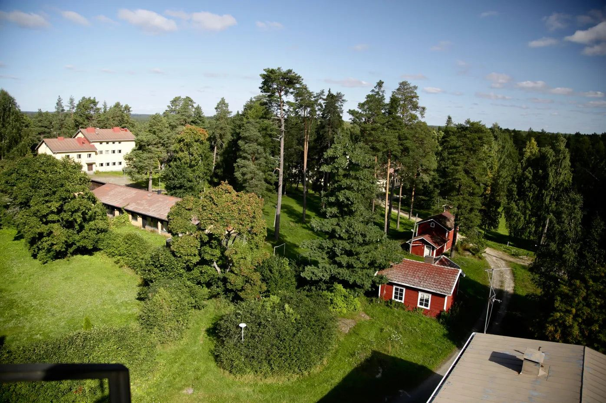
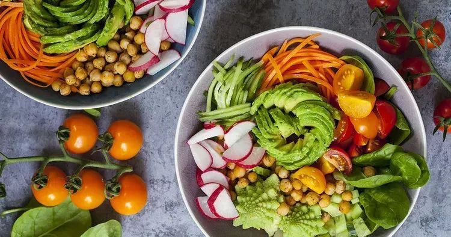
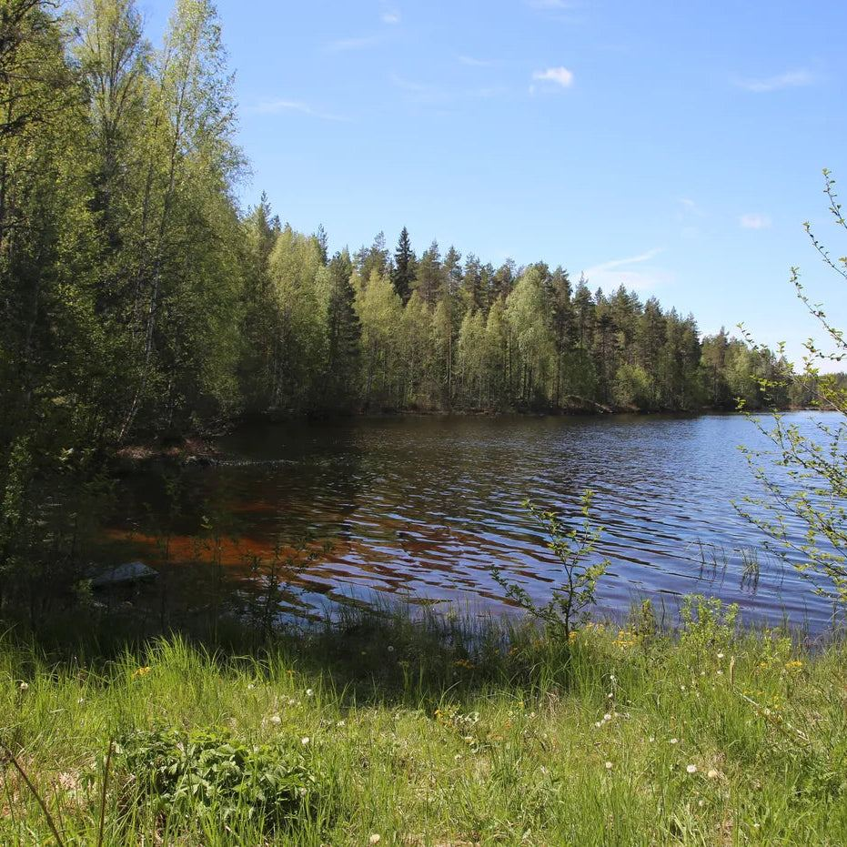
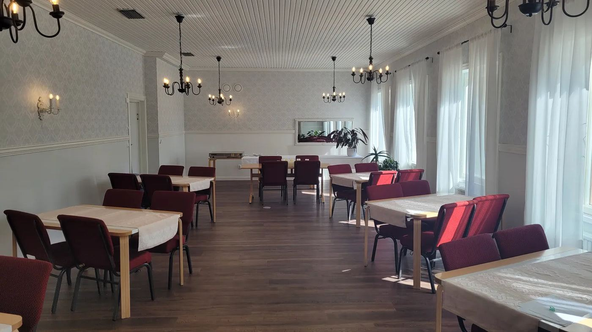

Anyone, anywhere: give by card
Monthly or once, in a minute. Secure payment by Stripe, straight to the Koivikko Foundation. Cancel a monthly gift anytime.
Give by card
Non-profit since 2019 · Mikkeli, Finland
A place where people stop, renew and continue stronger — kept open by friends like you. A small monthly gift makes the biggest difference.
0 people are pledging a combined €0 this month towards the mission of Koivikko.
monthly supporters goal
Need a tax-deductible receipt?
US tax receiptGive through OCI for a US tax deductionThree ways to give
Most supporters give by card. If you need a tax-deductible receipt in Australia or the US, we’ll send you to the right partner.
Monthly or once, in a minute. Secure payment by Stripe, straight to the Koivikko Foundation. Cancel a monthly gift anytime.
Give by cardIf you’re an Australian resident looking to give through family trust distributions, we’ll put you in touch with someone at the North New South Wales Conference.
Donating from the USA and need a US tax receipt? You can give through OCI, which offers tax deductions for US donors.
Give via OCIFI11 5271 0420 4946 51
Why your support matters now
Since 2019, Koivikko has welcomed people to 33 hectares of forest and lakeside just outside Mikkeli, Finland — to rest, learn healthier ways of living and rediscover what matters.
Through health courses like Karpalo, plant-based cooking with KoKaRu, sauna by the lake and simply time in nature, guests leave lighter, healthier and more hopeful.
Koivikko is a non-profit. To keep its doors open and its programs running, it needs a circle of regular supporters standing behind it. That is what this campaign is about — and why every monthly gift counts.
years in a row of the ARISE program — and this year was the best one yet.
What your gift helps keep going

Karpalo 5-day health courses, KoKaRu plant-based cooking and raw food courses that help people turn their health around.

Forest trails, a lakefront and saunas — a peaceful setting where body and mind can recover.

A welcoming team and a historic home that keeps opening its doors to guests, families and gatherings.
Real stories
“Koivikko has been my retreat for body and mind, and my home for the soul … I found space to heal, grow, and rediscover a healthier, more intentional way of living.”
“Rheumatism eased, metabolic syndrome nearly disappeared, and weight dropped from 125 kg to 75 … medications are no longer needed.”
“Being in beautiful, peaceful nature has a calming effect … It’s also helped me in my health journey, giving me space to slow down, rest, and feel my best.”
Directly to the Koivikko Foundation (Koivikko Elämäntapa Instituutti sr), the non-profit charity behind Koivikko Lifestyle Center in Mikkeli, Finland.
Yes, anytime. You can update your card or cancel in a couple of clicks on Stripe’s secure page. To change the amount, cancel and start a new gift.
Yes. If you gave by mistake or gave the wrong amount, email koivikkolife@gmail.com with the email address you used and the date of the gift. Our administrator will refund it to the card you paid with.
Card donations are not tax-deductible by default. Australian family-trust donors can get in touch with the North NSW Conference, and US donors can give via OCI for a US tax receipt.
Yes. Payments are processed by Stripe, a global payments provider. Your card details go straight to Stripe — Koivikko never sees or stores them.
Never. The live feed only ever shows an amount and whether the gift is monthly. Your country is shown only if you tick the box to show it.